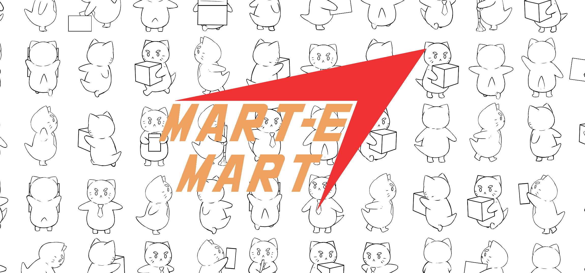

OTHER PROJECTS
>
-
Dash And Slash
This was
my main project during my gap year
and largest, completed project to date. It is a
fully released video game
(Steam and Itch.io) made entirely by me, including all art and music.
In total it took around
8-9 months
from start to finish, however, my work on it was inconsistent and personally I estimate it should have taken only about 4 or 5.
I wouldn't consider the game a failure, however, if I made it again
I would probably change ~80% of the final version.
There is a demo on the steam page
if you want to try it out.
-
Mart-E-Mart

"Mart-E-Mart" is my
current project,
I am the programmer on the project and am working alongside an artist friend of mine.
There is a chance we'll recruit more people in the future but for now it is just us.
Development hasn't been going on for long (and has been side-tracked by both of us going to uni)
but we already have a strong idea of what we want in the final version. The art style of the game
could be likened to
"Paper-Mario",
though the gameplay is based around a convenience store.
So far, the
majority of my work has gone towards making general code
(a performant pathfinding implementation, a replacement for Unity's default console, etc.)
that can be carried forward.
We're currently expecting it to be
done sometime in 2023.
-
Smaller Projects
My first released game was made with two friends and it was called
Skelli-Boy.
Unfortunately, it has been taken down since. It was released in late 2020.
I have also participated in around 10 game jams (typically short, game making competitions),
the code for those projects is always open-source and can be found on my GitHub.
The above image is from my submission to Mini-Jam 111.